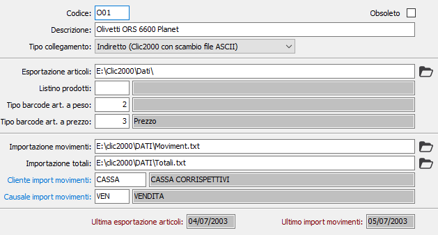

Dispositivi on line
La procedura consente di codificare i dispositivi remoti a cui collegare la gestione dei movimenti di vendita e dei prodotti.
Nella parte finale della finestra sono visibili le date relative all'ultima esportazione dei prodotti ed all'ultima importazione dei movimenti relativi al dispositivo attivo.

CODICE: codice identificativo del dispositivo, a libera scelta dell'utente. Sul campo sono presenti le funzioni di ricerca (F9).
DESCRIZIONE: descrizione del dispositivo.
TIPO COLLEGAMENTO: campo che definisce il tipo di dispositivo utilizzato; valori possibili:
indiretto se ci si deve collegare con la procedura CLIC2000 attraverso lo scambio di informazioni trasmesse tramite l'ausilio di file ASCII;
diretto se ci si deve collegare ad un registratore di cassa Olivetti Explora tramite una connessione database diretta.
integrato se si deve effettuare la ricezione dei movimenti da un applicativo esterno che riversa i dati su apposite tabelle di OS1.
ESPORTAZIONE ARTICOLI/DATABASE DATI: il campo viene interpretato in relazione al tipo di collegamento: per il collegamento indiretto è il percorso su cui sarà generato il file di esportazione dei prodotti da OS1; per il collegamento diretto è il nome del database di Explora, completo di percorso. In quest'ultimo caso sarà presente un pulsante per verificare la correttezza della connessione. Per il collegamento di tipo integrato non è prevista l'esportazione dei prodotti.
LISTINO PRODOTTI: eventuale codice del listino prodotti da proporre in fase di esportazione articoli. Sul campo sono presenti le funzioni di ricerca (F9). Per il collegamento di tipo integrato non è prevista l'esportazione dei prodotti.
TIPO BARCODE ART. PESO: eventuale codice del tipo di barcode per l'interpretazione dei codici a barre degli articoli gestiti a peso. Sul campo sono presenti le funzioni di ricerca (F9).
TIPO BARCODE ART. PREZZO: eventuale codice del tipo di barcode per l'interpretazione dei codici a barre degli articoli gestiti a prezzo. Sul campo sono presenti le funzioni di ricerca (F9).
IMPORTAZIONE MOVIMENTI: valido solo per la tipologia indiretta; indicare il file, completo di percorso, che contiene i movimenti esportati dalla procedura CLIC2000.
IMPORTAZIONE TOTALI: valido solo per la tipologia indiretta; indicare il file, completo di percorso, che contiene i totali dei movimenti esportati dalla procedura CLIC2000.
CLIENTE IMPORT MOVIMENTI: eventuale codice del cliente da proporre in fase di ricezione movimenti. Sul campo sono presenti le funzioni di ricerca (F9).
CAUSALE IMPORT MOVIMENTI: eventuale codice della causale di vendita da proporre in fase di ricezione movimenti. Sul campo sono presenti le funzioni di ricerca (F9).